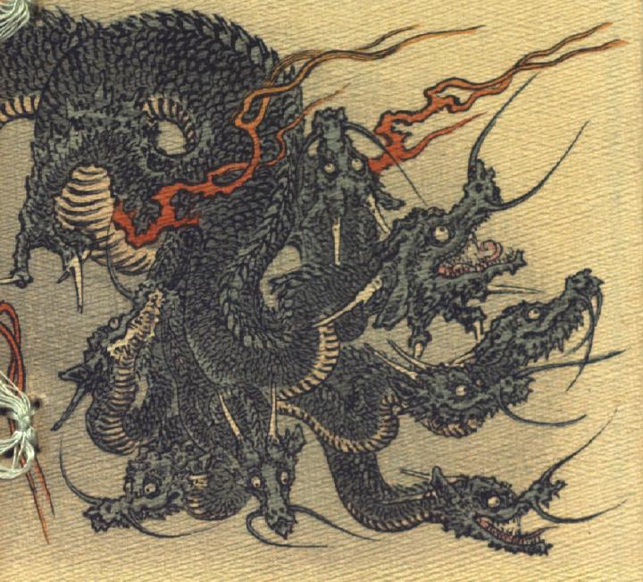

八頭の大蛇。首のところで頭が8つに分かれた龍。それぞれの頭には、2本角が生え、目玉は丸く、大きく裂けた口に牙が並び、開いた口から細長い舌が覗いている。鼻先に長いひげを2本生やしている。全身は緑色の鱗に覆われており、前脚は3本指で、鋭く長い爪が生えている。体から炎の筋が立ち上っている。8つの頭はぞれぞれ別々の方向に向き、全身をくねらせている。
著作者：J.Dautremer／出典：親書誌：U426_nichibunken_0117：Le serpent à huit têtes／日付：2006／資源識別子：U426_nichibunken_0117_0001_0000
Copyright (c)2010- International Research Center for Japanese Studies, Kyoto, Japan. All rights reserved.